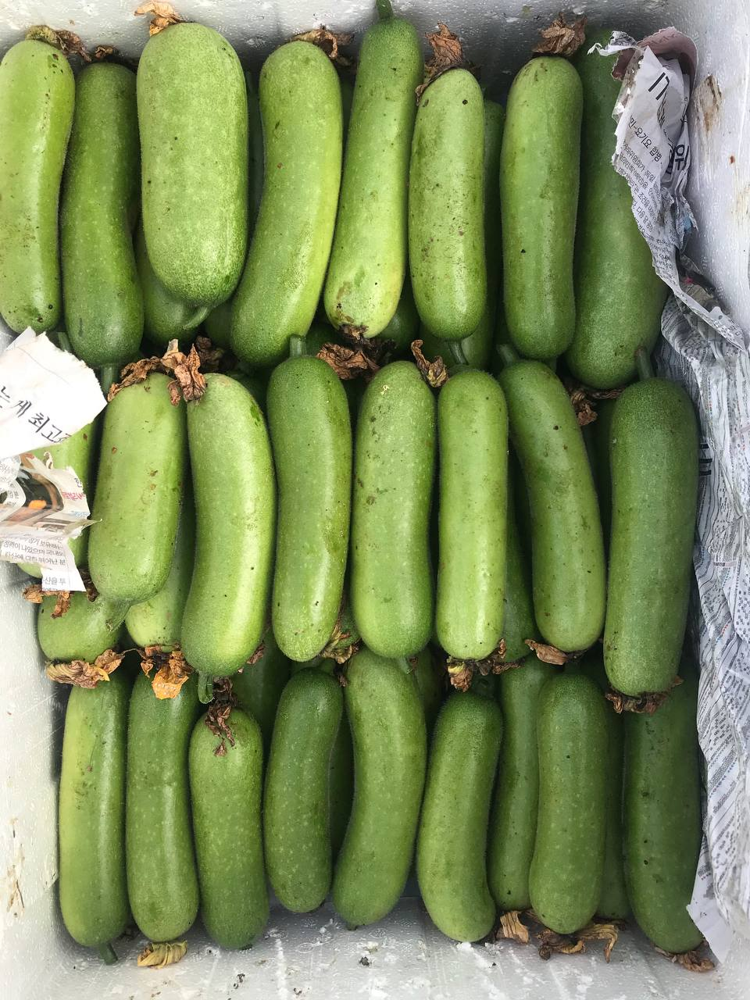
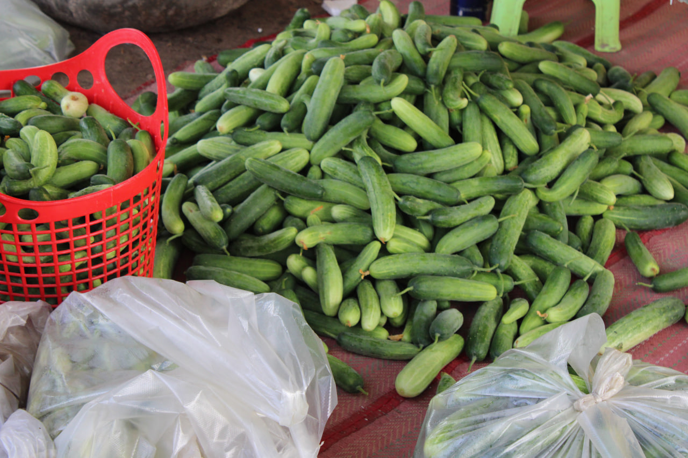
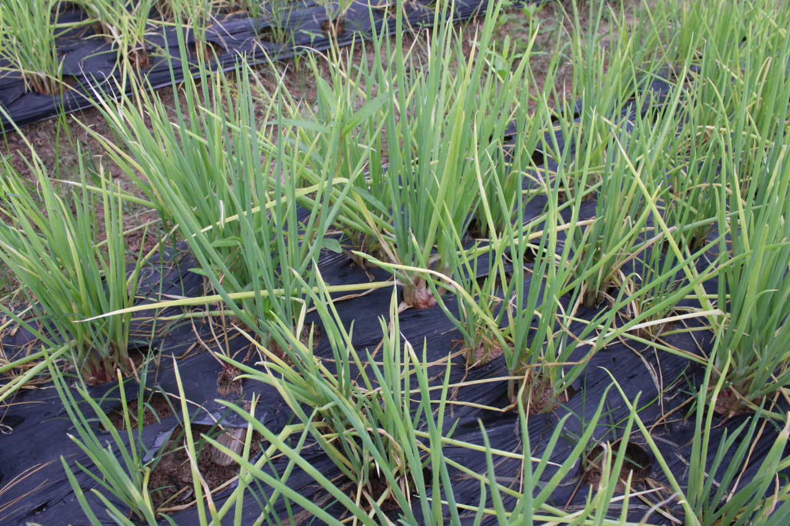
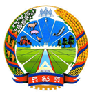
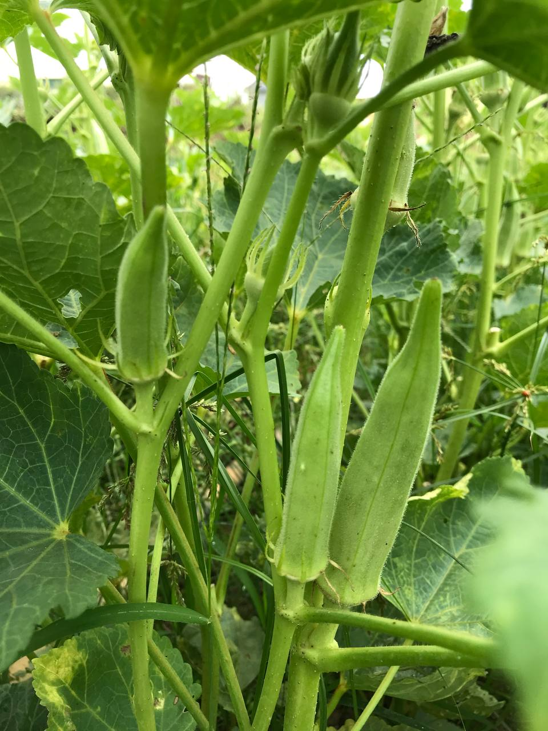

From Struggle to Success
Meet Mr. Vanna, a rice farmer from Battambang who tripled his harvest using KsSEED's climate-resilient rice varieties.
📍 Battambang Province KsSEED
KsSEED

High-quality, climate-resilient seeds for sustainable agriculture
Premium quality seeds for every season

Harvest age: 90 to 95 days from direct planting.

Harvest age: 32 to 35 days (small pods), 58-65 days (large pods).

Harvest age: 35 to 40 days from direct planting.

Easy to grow, fast growing, resistant to Cambodian climate.

KsSEED's Pumpkin seeds increased my harvest by 40%. The quality is exceptional and the support team is always helpful.
The vegetable seeds are climate-resilient. Even during dry season, my crops thrived. Thank you KsSEED!
I've been farming for 30 years. KsSEED seeds are the best I've ever used. High yield and disease resistant.
Welcome to KS Seed
To accomplish the mission, Ks Seed has set goals such as:
1. Identification of Essential Demand Crops for Markets in and Out of Each Region.
2. Capturing 85% of the domestic crop varieties market and targeting overseas sales markets.
3. Acquired modern breeding techniques and established vegetable crop breeding stations (short-term crops) to become an international standard.
4. Contributing to creating jobs and producing many Khmer Rouge professionals.
Promote seed sales through Depots and technical services to the community, take into account the transparency, quality, value and morality of Ks Seed through:
1. Set up a test station and produce your own varieties.
2. Strengthening the capacity of specialist officials to develop and enhance sustainable.
3. Research and reinforce new and established varieties.
4. Collaborate with relevant partners.
KsSeed was established and produced the 25a experimental Beans, pods and packaged the market trial Beans, pods and bindweed.
We have expanded the production of Beans, pods, hair dispersal variety 1 hektometer, and have extended the market to 24 varieties. In addition, we have expanded the contract for bindweed.
We have expanded the market to 44 varieties, produced Beans, pods of the Ratanak variety, and signed a contract to produce bindweed.
We have expanded the market to 74 varieties and signed a production contract with the Otdam Meanchey Union Community for mung bean and Beans, pods seeds.



Advancing agricultural science for better tomorrow

At KsSEED, we operate a state-of-the-art research facility dedicated to developing climate-resilient seed varieties. Our team of agronomists and scientists work tirelessly to ensure every seed meets the highest quality standards.
Rigorous quality control and germination testing
Developing varieties resistant to heat and drought
Breeding seeds with natural pest and disease resistance
Maximizing crop productivity and farmer income
Real stories from real farmers

Meet Mr. Vanna, a rice farmer from Battambang who tripled his harvest using KsSEED's climate-resilient rice varieties.
📍 Battambang Province
Mrs. Sreymom shares how KsSEED's vegetable seeds helped her start a successful organic farm and support her family.
📍 Siem Reap Province
Young farmer Dara combines traditional knowledge with KsSEED's innovative seeds to create a thriving fruit farm.
📍 Kampong Cham ProvinceTips, news, and insights for better farming
 Farming Tips
Farming Tips
Learn the optimal techniques for planting rice during Cambodia's wet season to maximize your harvest and minimize crop loss.
Read More →
Training
Discover natural and effective ways to protect your vegetable crops from pests without using harmful chemicals.
Read More →
Events
Join us for a free training session on modern farming techniques and seed selection. Register now for limited spots!
Read More →We're here to help you grow
Borey Piph Thmei Boeung Chhouk,
House No. 313, Street F,
Kraing Kasang Village,
Kraing Thnong Sangkat, Sen Sok District,
Phnom Penh
+855 93 755 638
+855 85 993 938
sale@ksseedcambodia.com
Monday - Friday: 7:30 AM - 7:30 PM
Saturday: 7:30 AM - 12:00 PM